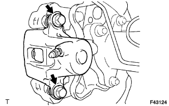
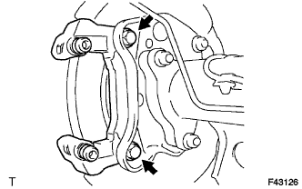
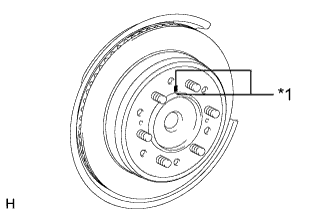
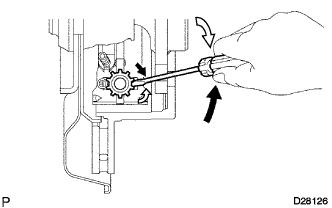

ЗАДНИЙ ТОРМОЗ > СНЯТИЕ |
| 1. СНИМИТЕ ЗАДНЕЕ КОЛЕСО |
| 2. СЛЕЙТЕ ТОРМОЗНУЮ ЖИДКОСТЬ |
| 3. ОТСОЕДИНИТЕ ЗАДНИЙ ЛЕВЫЙ ГИБКИЙ ШЛАНГ |
 |
Снимите пустотелый соединительный болт-штуцер и прокладку с колесного тормозного цилиндра заднего дискового тормоза, а затем отсоедините от тормозного цилиндра задний гибкий шланг.
| 4. СНИМИТЕ ТОРМОЗНОЙ ЦИЛИНДР ЗАДНЕГО ЛЕВОГО ДИСКОВОГО ТОРМОЗА В СБОРЕ |
|  |
Снимите 2 направляющих пальца с колесного тормозного цилиндра заднего дискового тормоза.
Снимите колесный тормозной цилиндр заднего дискового тормоза с тормозной скобы заднего дискового тормоза.
| 5. СНИМИТЕ КОЛОДКИ ЗАДНЕГО ДИСКОВОГО ТОРМОЗА |
Снимите 2 тормозных колодки заднего дискового тормоза вместе с противоскрипными пластинами заднего дискового тормоза с тормозной скобы заднего дискового тормоза.
| 6. СНИМИТЕ ПРОТИВОСКРИПНУЮ ПЛАСТИНУ ЗАДНЕГО ДИСКОВОГО ТОРМОЗА |
Снимите 2 противоскрипных пластины заднего дискового тормоза с каждой тормозной колодки заднего дискового тормоза.
| 7. СНИМИТЕ ПЛАСТИНУ-ИНДИКАТОР ИЗНОСА КОЛОДОК ЗАДНЕГО ДИСКОВОГО ТОРМОЗА |
Снимите пластину-индикатор износа колодки заднего дискового тормоза с внутренней колодки дискового тормоза.
| 8. СНИМИТЕ ОПОРНУЮ ПЛАСТИНУ КОЛОДОК ЗАДНЕГО ДИСКОВОГО ТОРМОЗА № 1 |
Снимите 2 опорные пластины колодок с тормозной скобы заднего дискового тормоза.
| 9. СНИМИТЕ ОПОРНУЮ ПЛАСТИНУ КОЛОДОК ЗАДНЕГО ДИСКОВОГО ТОРМОЗА № 2 |
Снимите 2 опорные пластины колодок с тормозной скобы заднего дискового тормоза.
| 10. СНИМИТЕ ЛЕВУЮ ТОРМОЗНУЮ СКОБУ ЗАДНЕГО ДИСКОВОГО ТОРМОЗА В СБОРЕ |
|  |
Выверните 2 болта и снимите 2 плоских шайбы и тормозную скобу заднего дискового тормоза.
| 11. СНИМИТЕ ЗАЩИТНЫЙ ЧЕХОЛ ВТУЛКИ ЗАДНЕГО ДИСКОВОГО ТОРМОЗА |
Снимите защитный чехол втулки заднего дискового тормоза с тормозной скобы заднего дискового тормоза.
| 12. СНИМИТЕ НАПРАВЛЯЮЩУЮ ВТУЛКУ ЦИЛИНДРА ЗАДНЕГО ДИСКОВОГО ТОРМОЗА |
Снимите направляющую втулку цилиндра заднего дискового тормоза с тормозной скобы заднего дискового тормоза.
| 13. СНИМИТЕ ПРОБКУ ОТВЕРСТИЯ КОЛЕСНОГО ТОРМОЗНОГО ЦИЛИНДРА ЗАДНЕГО ДИСКОВОГО ТОРМОЗА |
Снимите пробку отверстия колесного тормозного цилиндра заднего дискового тормоза с тормозной скобы заднего дискового тормоза.
| 14. СНИМИТЕ ЗАДНИЙ ТОРМОЗНОЙ ДИСК |
|  |
Если диск планируется использовать повторно, нанесите метки на задний диск и ступицу полуоси.
| *1 | Метка |
|  |
Поверните регулятор, пока диск не будет вращаться свободно, а затем снимите диск.
 | Регулятор сводит колодки |
 | Регулятор разводит колодки |